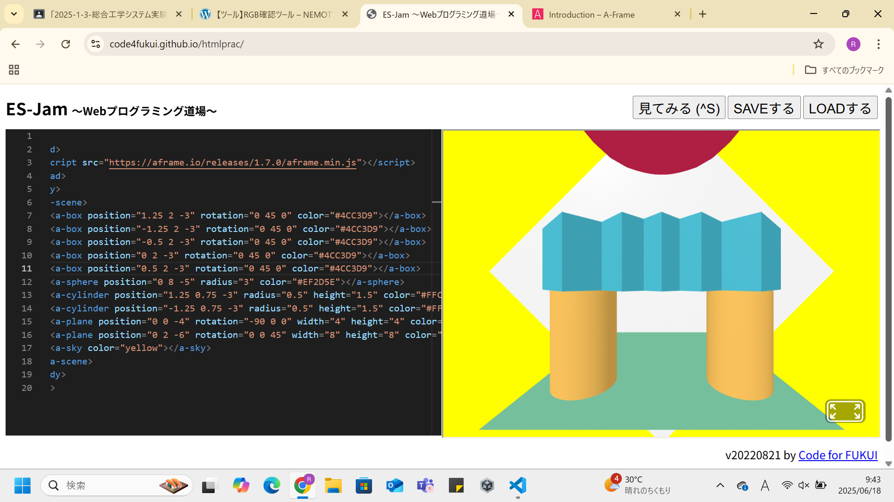
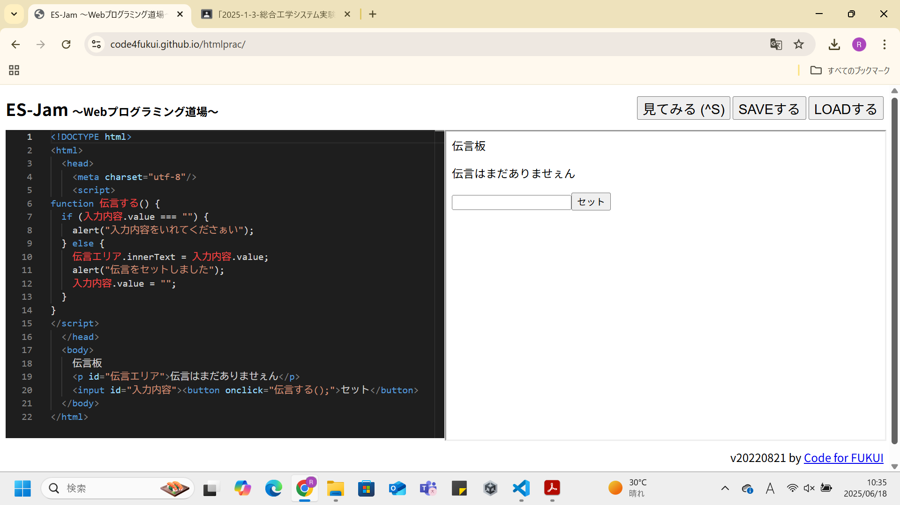

第3週目
3-1 JavaScript体験：VR空間を作る
自作した３次元空間
1.内容
A-Frameをつかい、javascriptを用いてVR空間を作成した。
テンプレートのコードをもとにして、座標や回転の値を色々と変えてみたり、コードを複製してみたりした。
VR空間を作成してみると聞いて、難しそうだなと感じたが、A-Frameを使うことによって数行のコードで作れて驚いた。
コントローラーで動かせられるようにしたらゲームっぽくなりそうだな、と思った。
A-Frameをつかい、javascriptを用いてVR空間を作成した。
テンプレートのコードをもとにして、座標や回転の値を色々と変えてみたり、コードを複製してみたりした。
コントローラーで動かせられるようにしたらゲームっぽくなりそうだな、と思った。
3-2 JavaScript体験：伝言プログラムを作る
伝言板
1.内容
VR空間を作成したときと同じサイトを使い、javascriptで伝言板のサイトを作成した。
文字を入力してボタンを押すと、サイトの上のほうにその文字が表示されるようになっている。
2.感想
こちらも簡単そうだと思っていたが、個人的にはVR空間作成より難しかった、
javascriptは、webサイトで自分の好きなアプリを作ることができるのがいいなと思った。
VR空間を作成したときと同じサイトを使い、javascriptで伝言板のサイトを作成した。
文字を入力してボタンを押すと、サイトの上のほうにその文字が表示されるようになっている。
2.感想
こちらも簡単そうだと思っていたが、個人的にはVR空間作成より難しかった、
javascriptは、webサイトで自分の好きなアプリを作ることができるのがいいなと思った。
3-3 JavaScriptプログラムの３次元空間の体験

1.内容
3-1で作成したVR空間を、実際にVRを使って体験した。
物体を持ち運んだりその持った物体でボールを打ったりできた。
2.感想
コードで作った3Dの空間を、VRとして実物で再現することができるのがすごいなと感じた。
もっと色々なものを作って、VRでゲームが出来るようにしてみたいと思った。
3-1で作成したVR空間を、実際にVRを使って体験した。
物体を持ち運んだりその持った物体でボールを打ったりできた。
2.感想
コードで作った3Dの空間を、VRとして実物で再現することができるのがすごいなと感じた。
もっと色々なものを作って、VRでゲームが出来るようにしてみたいと思った。